Real-time rendering
Following projects use LightsprintGL library for rendering and LightsprintCore for lighting calculations.
They are located in samples directory in the SDK, binaries in bin.
Lightsmark
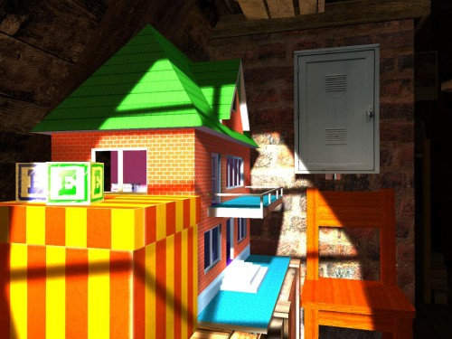
|
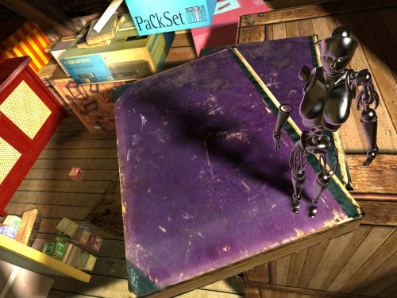
|
- realtime GI in scene from real game (World of Padman)
- original scene without any modifications is loaded to show engine robustness
- undocumented feature: enter interactive mode by spacebar, control everything yourself, F1=help
- complete Lightsmark is not part of SDK, but you can download it here
SceneViewer

move lights, compare realtime/offline GI |
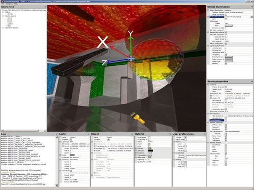
edit objects/lights/materials |
- single function call: rr_ed::sceneViewer(), you can run it from your code to visualize data
- realtime GI: freely move all lights, no precalculations
- precomputed GI: test build/load/save lightmaps
- edit materials, manipulate objects
- import/export 95+ fileformats
- debugging: visualize tangents, see rays shot from individual triangles or texels etc
MovingSun
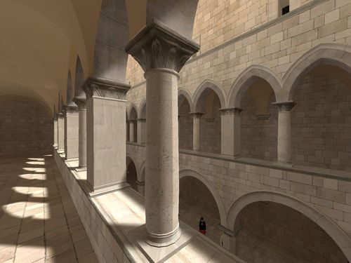
dynamic Sun |
dynamic objects |
- realtime GI, dynamic objects lit by dynamic Sun and skybox
- loads collada scene, commandline or drag&drop to open custom scene
- uses internal renderer
RealtimeLights
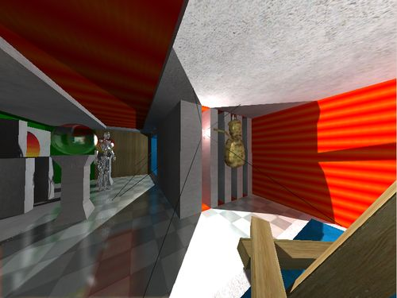
freely move lights and objects |
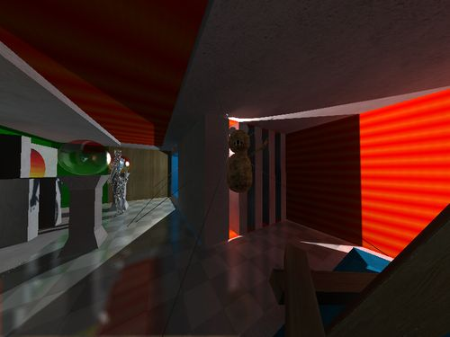
occluded light, GI changes in realtime |
- realtime GI, color bleeding, dynamic objects occlude lights loaded from scene
- all lights and objects movable
- loads collada scene, commandline or drag&drop to open custom scene
- uses internal renderer
RealtimeRadiosity
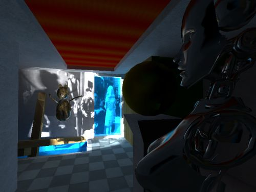
freely move light, objects |
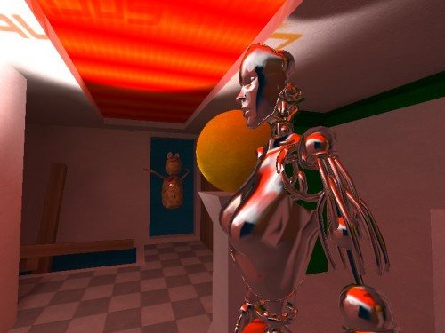
global illumination changes in realtime |
- realtime GI, color bleeding, penumbra shadows, projected video in custom renderer
- all lights and objects movable
- loads 3ds scene and 3ds dynamic objects, uses 1 custom area light rather than lights from file
- shows that lighting works equally well for animated object
- shows feeding external 3ds renderer with Lightsprint computed illumination
Lightmaps
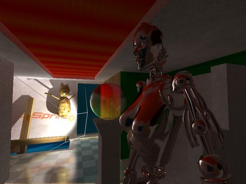
realtime GI = fully dynamic |
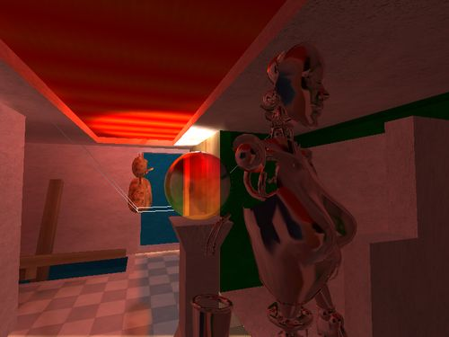
lightmaps + lightfield = faster |
- demonstrates differences between realtime and precomputed lighting
- starts with fully realtime GI (both lights and objects dynamic)
- after pressing 'p', switches to lightmaps+lightfield (faster, but light is static)
- '1'/'2'/'3' sets realtime/precomputed vertex/precomputed pixel mode
PenumbraShadows
penumbra shadows |
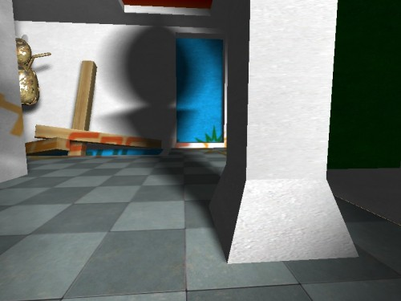
penumbra shadows |
- penumbra shadows in custom renderer
- simple lighting, no global illumination, only constant ambient